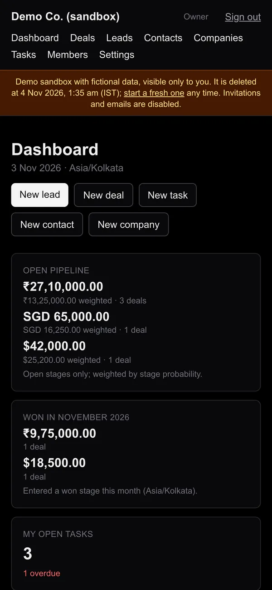

Organizations
Each team works in its own organization with a private URL space. Creating an organization sets up a default sales pipeline automatically.
Verified liveA multi-tenant CRM that gives small sales teams one place to capture leads, move deals through their own pipeline, and keep follow-ups on track — with each organization's data isolated and every action checked against the user's role.
Explore the real application, not a mock-up. The demo opens your own private copy of the CRM with fictional data, seen as its owner would see it. No sign-up is needed. It is read-only: every screen and form is there, but changes are not saved, and each preview ends after about two hours.
Small teams often track sales across spreadsheets, chat threads and memory. Follow-ups slip, nobody is sure which deals are real, and the numbers never quite add up.
This CRM brings that work into one shared workspace per organization. A lead is captured and qualified, then converted into a contact, a company and a deal in a single step. Deals move through the team's own pipeline stages until they are won or lost — and a lost deal always records why.
Calls, meetings and notes are logged against the records they belong to, and tasks carry due dates so overdue follow-ups stand out. The dashboard summarises open pipeline, won revenue and outstanding work, in the organization's own timezone and without ever mixing currencies.
Teams invite colleagues by email and give each person a role — from Owner down to read-only Viewer — so everyone sees what they need and can change only what they should.
Add a lead with its source and status.
Track it from new to contacted to qualified.
Create contact, company and deal at once.
Move the deal through pipeline stages.
Mark it won, or lost with a reason.
Screenshots of the real interface, cropped to the relevant area but not retouched. Select any image to view it at full size.
The same screens adapt to small displays: navigation wraps, cards stack, and the key numbers stay readable without zooming.

All screenshots come from a demo sandbox running on an isolated development database, populated with fictional companies, people and amounts. They were captured before the public demo became read-only, so the sandbox banner and the enabled buttons differ slightly from the interactive demo (opens in a new tab), where every form is shown but changes are not saved.
Every capability below is implemented. The label shows how far it has been verified.
Each team works in its own organization with a private URL space. Creating an organization sets up a default sales pipeline automatically.
Verified liveCompany records with industry, domain and location; contacts linked to their company. Email addresses stay unique within an organization.
Verified liveLeads with source, status and owner. Conversion creates the contact, links or creates the company and optionally opens a deal, all in one transaction.
Verified liveA board and detail pages for deals, with stage moves, probabilities, owners and amounts in any currency.
Verified liveA deal can only be marked lost with a written reason. Reopening it as won clears the reason and records the win date.
Verified liveCalls, meetings and notes logged on records; tasks with due dates, assignees and overdue tracking.
Verified liveOpen and weighted pipeline per currency, deals won this month, open and overdue tasks, lead counts and recent activity.
Verified liveEmail-and-password accounts verified by email through a transactional email provider. Password reset is built and covered by tests as well.
Verified liveRename, re-weight, reorder, add or remove pipeline stages, and set the organization's timezone for dates and deadlines.
TestedFive roles — Owner, Admin, Manager, Sales rep and Viewer — enforced on the server for every read and write.
TestedInvite colleagues by email with a chosen role; resend or revoke pending invitations, change roles or remove members.
TestedEach visitor gets a private, time-limited copy of a fictional company's CRM and sees it as its owner. Every change is refused on the server, so nothing a visitor does is saved.
Verified livePages render on the server, and every query passes through one data-access layer that knows which organization and role it is acting for.
Forms submit straight to Server Actions; the browser holds no business logic.
Routes per organization; every action verifies the request origin before doing anything.
Identity from a database-validated session; organization and role from the live membership record.
Input validated with Zod; every query scoped to the current organization.
Composite foreign keys, constraints and versioned migrations.
Sessions, organizations, verification.
Transactional email.
Production, scheduled jobs.
Every CRM record belongs to an organization. Relationships between records use composite keys that include the organization, so the database itself rejects a link from one tenant's deal to another tenant's contact.
The organization and role come from the user's current membership in the database — never from the URL, the client or a cached session hint. A user who is not a member gets the same "not found" as a missing organization.
Amounts are stored as fixed-point decimals and summed in integer cents, one currency at a time. "Today", "overdue" and "won this month" are computed in the organization's timezone.
Records are soft-deleted by default, and foreign keys restrict hard deletes, so history is not silently lost.
Deployed on Vercel from the main branch, in Singapore, the same region as the database. Schema changes ship as reviewed, versioned Prisma migrations, applied deliberately rather than during the build.
A CRM holds a business's customer relationships. These safeguards are part of the code, not an afterthought.
Isolation is enforced in the data-access layer and again by the database schema. Automated database tests try other organizations' record IDs against the CRM's entities and expect refusal.
A permission matrix for five roles is checked on the server for every operation. Admins cannot promote, demote or remove Owners or other Admins.
Verified email accounts, per-IP and per-account throttling, and responses that do not reveal whether an email address is registered. Sign-up is limited to an approved list while the product is in private use.
Every Server Action confirms the request comes from the application's own origin. A custom lint rule flags any new action that forgets the check.
Invitation links carry a 256-bit random token. Only its hash is stored, it can be used once, and it is never written to logs — so a database leak exposes no usable link.
The production server refuses to start if required settings are missing or unsafe, and security headers such as HSTS and frame protection are sent on every response.
Test and migration tooling refuses to run unless it can prove it is pointed at a disposable test database. Production and development databases are explicitly blocked.
Releases are checked against the live site: health check, page responses, refused sign-ins, rejected cross-origin requests and sign-up restrictions.
A demo sandbox is read-only because the database says so, not because buttons are disabled. Every organization Server Action refuses it before touching data, and the data-access layer refuses it again on its own.
Demo starts are rate-limited per client IP address, the number of active previews is capped, and a scheduled job deletes expired sandboxes. Demo accounts cannot sign up, reset passwords, invite people or create organizations.
A few of the harder problems from building and launching the platform, and how each was handled.
Soon after launch, production logged occasional "query read timeout" errors, always right after a quiet period. Pages still rendered, but the cause was unclear.
Traced the message to the database driver's own timer, then built a local harness that suspends and resumes the server behind a network proxy to reproduce it reliably. Cause: a query still running when the serverless instance was frozen.
Each in-flight query now keeps the instance alive until it settles. The fix reproduced cleanly in the harness and is being monitored in production.
In a multi-tenant app, a single query missing its organization filter can leak one customer's data to another.
Moved all data access behind one layer that requires a server-built tenant context, and added composite foreign keys so cross-tenant links are impossible at the database level.
Database tests try foreign-tenant IDs across the CRM's entities and roles; all are refused.
Teams sell in several currencies, and "overdue" or "won this month" depend on where the business is, not on the server's clock.
Exact fixed-point arithmetic in integer cents, with totals kept separate per currency. Business dates come from the organization's timezone.
The dashboard never adds rupees to dollars, and a task due today is not overdue until the organization's day ends.
Database tests create and delete data. Pointing them at the wrong database by mistake would be costly.
Tests run only against a disposable database branch they can identify. The tooling checks that identity before connecting and refuses known production and development targets.
The full suite runs freely on an isolated copy, and a regression test proves the production database is refused.
A portfolio demo should show every screen, form and setting, yet anonymous visitors must not change data, see each other's previews or reach real organizations.
Each visitor gets an ordinary organization of their own, so the existing tenant checks isolate it. A database-backed read-only flag is enforced in every organization Server Action and again in the data-access layer; forms stay visible with disabled, explained buttons.
In the production launch checks, all 87 forms submitted with their disabled buttons forced back on were refused, and two visitors could not open each other's sandbox.
Current, well-supported tools, each with a clear job.
App Router, Server Components and Server Actions.
End-to-end types, strict compilation.
Accessible forms, light and dark themes.
Every input checked on the server.
Managed Postgres with isolated branches for testing.
Typed queries and versioned migrations.
Sessions, organizations, roles and invitations.
Hosting, scheduled jobs and transactional email.
The application is deployed and running in production, and it is actively developed. It is not presented as a finished enterprise product.
Planned next steps. None of these are available yet.
Organization-wide export for Owners and Admins.
A record of important changes, visible to Owners and Admins.
A verified sending domain, so invitations reach any teammate.
A custom-products e-commerce experience for personalised stainless-steel pendants and keychains.
A showroom website for a furniture and mattress business in Goregaon West, Mumbai.
I design and build web applications end to end — from the data model and security to the screens your team uses every day. I'd be glad to hear what you're working on.